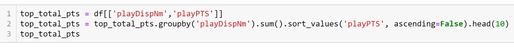
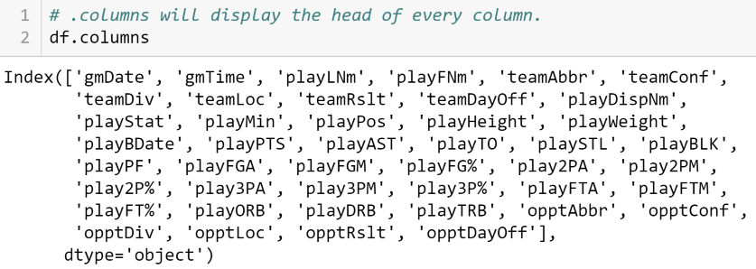
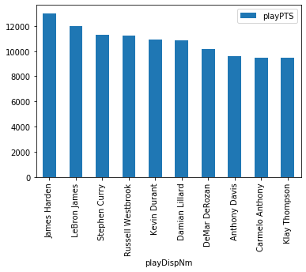
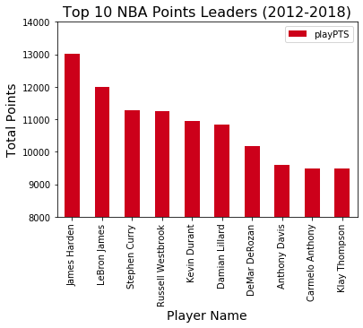
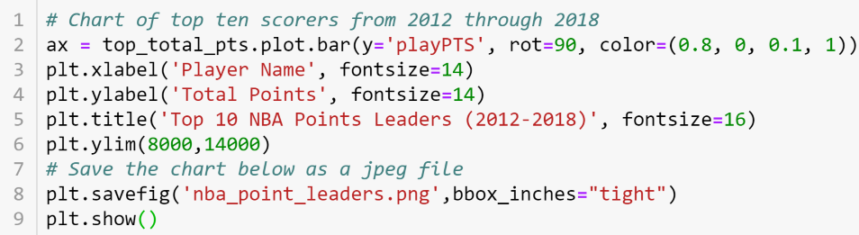

<div class="background"> 
  <div class="page">
    <div class="point-leaders">
        <h2 class="page-title"><u>BASICS</u></h2>
        <p>
          On the home page we walked through how to find the top scorers from
          our Kaggle dataset file <span>2012-18_playerBoxScore.csv</span>.  These same 
          three lines of code, again seen below, can be used to find out the top 
          ten leaders in any statistic that exists as a column in the data frame.
          To do just that, all you need to do is replace "playPTS" in both the 
          first and second line of code with the head of any other column "playAST" 
          for example.
        </p>
        
      </div>
      <hr>

    <div class="columns">
      <p class="check-columns">
        If you'd like to see all the columns that are available to you, all you need to do 
        is enter your is add ".columns" after the name of your data frame. <span>Rememebr that 
        our original data frame with ALL player boxscore data is named df.</span>
      </p>
      
    </div>
    <hr>

    <div class="matplotlib">
      <h3><u>MATPLOTLIB</u></h3>
      <p>
        As previously stated, MatPlotLib is used to visualize our data.  
        We can use the top ten point leaders dataframe we put together 
        on the home page as an example... 
      </p>
      
    </div>

    <div class="map">
      <p>
        The two lines of code above alone are enough to create our chart.  The first 
        line creates our chart. First we set the axis equal to our data fram "top_total_pts."
        Second, we decide whta kind of chart it is "plot.bar" (In this case a bar graph).  We 
        set the y axis to the number of points scored while the x-axis will default to the 
        player name. All the "rot=90" does is rotate the ticks on the x-axis 90 degrees so that 
        the names don't overlap. After our chart is created in the first line of code, the second 
        line displays the chart seen to the right.  This chart does technically display the names 
        of our top ten scorers from 2012 through 2018 but without already knowing what information 
        is being displayed all we really know are names and numbers, and the numbers could refer to 
        anything.  How are we supposed to know that the numbers refer to points scored?  And this 
        chart hardly shows any distinction bewteen our ten players.  The 10th highest is well over 
        9,000 and the 2nd highest is under 12,000, so why does our chart's y-axis start at 0 when 
        the lowest value being displayed is over 9,000?
      </p>
      
    </div>

    <div class="detailed">
      <p>
        Additional code can be added to our original two lines to make a much better visualization 
        of that same data.  We can even include a line of code that will save the chart as a jpeg 
        in our local directory.  Take a look at a more polished version of our code below.
      </p>
    </div>

    <div class="chart">
      
      
    </div>

    <div class="explanation">
      <p>
        Above we've added a line of code each to add a x-axis label, a y-axis label, and a title. 
        Thanks to that, we can now clearly identify what information is being displayed in the 
        chart.  There are two more lines that we've added, the first is the "ylim" which allows 
        us to set the beginning and the end of our y-axis.  This allows for greater parity in our 
        chart so that the differences between the players point totals are more clear.  The other 
        was the previously mentioned line that creates and saves a jpeg image of our chart, now the 
        chart is readily available for use anywhere else we may want it.
      </p>
    </div>
    <hr>

    <div class="summary">
      <p class="move-on">
        Now that we have covered the basics, you can now navigate the rest of the site with a 
        better understanding of where the information originates, how it is manipulated to display 
        the exact information we were looking for, and how that information can be visually  
        represented in a manner that most people find more pleasant than numbers alone.<br><br>
      </p>
      <p class="italic">
        The stat leaders page will contain many variations of the code above to see the leaders in 
        all major statistical catagories.  We can then see if there is any corilation between the 
        various stats (points, assists, rebounds, steals, blocks, 3-pointers, etc.).
      </p>
    </div>

    <div class="navigate">
        <a [routerLink]="['/']">PREVIOUS PAGE</a>
        <a [routerLink]="['/stat-leaders']">NEXT PAGE</a>
    </div>
  </div> 
</div> 